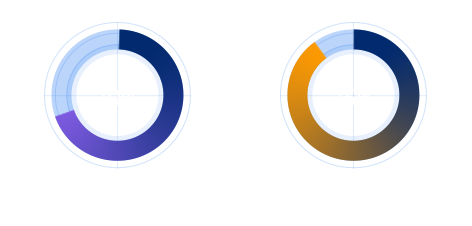
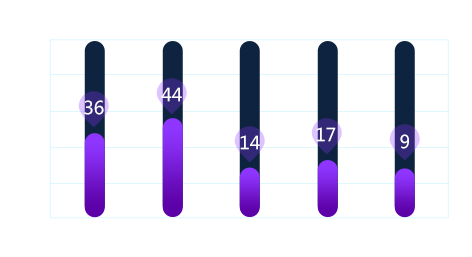
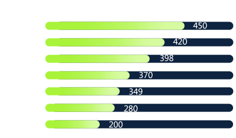

打击防控
打击防控
案件数量（件）
抓获人员（人）
发案
2,375
总数
4,964
立案
1,345
本市
2,472
破案
1,021
外省市
1,492
转化教育
攻坚对象分析

反复人员分析
年度人员反复统计
926 人
反复人员男女比例
女（人）380
男（人）546
41%
59%
打击防控分布图
案事件总体分布
涉案人员分布
地图
中心城区
东城区
西城区
朝阳区
海淀区
丰台区
石景山区
5
6
7
7
5
5
其他邪教情况通报数量

其他邪教防范处置情况

涉外斗争
单位：件
321
基本任务数量
309
完成任务数量
264
获特别嘉奖数量